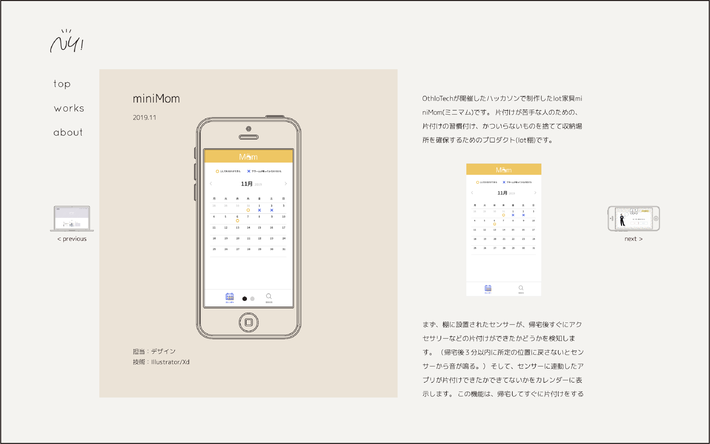

NY!
2019.12-2020.02

担当：デザイン/コーディング
技術：Illustrator/Photoshop/HTML/css/jQuery
URL：https://yamaguchi0327.github.io/NY-/html/top.html
前回のポートフォリオの反省点として、個性がなさすぎる、レスポンシブできていないという2つの課題がありました。 前回のポートフォリオは、作品を際立たせるために非常にシンプルなデザインにしましたが、 インターンでポートフォリオサイトを見ていただいた時に「もう少し個性を出した方が良い」という感想をいただいたので、 私らしさを表現しつつ、作品を主張できるようなデザインにしようと考えました。 また、分かりやすく、このサイトを見る人が迷ってしまうことのないようなデザインを常に心がけていました。


こちらが最初のデザインです。作品が大きく、シンプルでわかりやすいデザインでしたが、 自分の個性が全く出ていない事に気付き、このデザインを元に新しくデザインを作りました。


こちらが2つ目のデザインです。色味やフォントで少し私らしさが出たとは思うのですが、 作品の印象が薄くなってしまったと感じました。
３回目のデザインで完成したのが今回のポートフォリオサイトです。 メインカラーとして、私が好きなピンクベージュの色を使用し、 作品の色をメインカラーと同じトーンにした色を、作品の背景色に使用する事で、 私自身と作品、両方の個性が表現できたと思います。
大幅にデザインを変更したのが、作品ごとのページです。 常に作品を見ながら説明を読んで頂いた方が理解しやすいと思ったのと、 スプリットスクリーンレイアウトを使用しました。 作品のスクリーンショットが載っている左画面は固定で、説明が載っている右画面はスクロールすることができます。 画面の左右には次の作品・前の作品の小さなサムネイルをリンクとしておき、次の作品への誘導をしています。
また、前回のポートフォリオでは作品の画像が少なく、今回のポートフォリオではもっと作品を見て頂きたかったので、 スライドショーを採用しました。

レスポンシブに対応させることも一つの目標だったので、少しデザインを変更しつつレスポンシブ対応にしました。